| Name | Roll No. |
|---|---|
| Mayank Heda | T12_35 (2401031) |
| Ishita Gurbaxani | T12_-- (24010--) |
| Bhavisha Kewalramani | T12_-- (24010--) |
This is to certify that the mini project entitled “FixMyHostel: A Smart Hostel Complaint and Maintenance System Delivered Through an Agile and DevOps Pipeline” is a bona fide work of Mayank Heda (T12_35 / 2401031), Ishita Gurbaxani and Bhavisha Kewalramani, submitted in partial fulfilment of the requirements of the course Agile Software Development & DevOps Lab, Semester V, during the academic year 2026–2027.
Student accommodations and university hostels consistently face friction in managing daily infrastructure repairs. Plumbing leaks, electrical sparks, internet outages, and broken furniture are commonly reported through physical registers or unmonitored messaging groups. The resulting delays, duplicated tickets, and lack of escalation metrics degrade student living standards and leave hostel administration with zero visibility into maintenance turnaround times.
FixMyHostel addresses this challenge with a modern, role-based web application in which students report infrastructure issues from their rooms, receive an atomic daily token number resetting according to Indian Standard Time, track repair progress in real time across a 4-step lifecycle (RAISED → ACCEPTED → IN_PROGRESS → RESOLVED), and rate service quality upon completion. Maintenance staff work a live priority-sorted queue (Critical → High → Medium → Low), and the hostel warden oversees turnaround SLA metrics and appliance defect hotspots through an analytical dashboard.
The application was used as the vehicle for applying all seven experiments of the Agile Software Development & DevOps Lab to a single product. Work was planned as a Scrum backlog of fifteen issues across two sprints, each issue developed on its own Git branch and merged into main through a pull request. Both tiers of the application are containerised with Docker and composed with MySQL, Redis, Prometheus, Grafana and Nagios into a seven-service Docker Compose stack. A Jenkins multibranch pipeline lints, tests and builds every branch, and on main additionally deploys the stack, smoke-tests the exact version that was built, and rolls back to the last good version on failure. Prometheus and Grafana record business and service metrics over time, while Nagios checks the availability of every container and of the host machine through the NRPE agent configured in Experiment 7.
The delivered system comprises a React 18 frontend, a Node.js/Express API covered by 46 automated tests at 92.9% statement coverage, and nineteen consecutive successful Jenkins builds, nine of which deployed release versions 1.0.1 to 1.0.9 without manual intervention. A simulated morning rush of 245 complaints in four minutes was served at a median API latency of 3.5 ms. A configuration defect in the frontend container health check was detected by monitoring after deployment and corrected through the same branch, pull request and pipeline flow, which illustrates the feedback loop that the DevOps practices are intended to create.
Keywords: Agile, Scrum, Git, Docker, Docker Compose, Jenkins, CI/CD, Prometheus, Grafana, Nagios, React, Node.js
| Chapter | Title | Page |
|---|---|---|
| 1 | Introduction | 1 |
| 2 | Requirements and Agile Planning (Experiment 6) | 3 |
| 3 | System Design | 6 |
| 4 | Application Implementation | 10 |
| 5 | DevOps Implementation (Experiments 1–7) | 15 |
| 6 | Testing | 23 |
| 7 | Results and Discussion | 25 |
| 8 | Conclusion and Future Scope | 27 |
| References | 28 | |
| A | Appendix: Running the Project | 29 |
A typical college hostel houses hundreds of engineering students where daily maintenance issues—water leaks, short circuits, broken study tables, and WiFi downtime—occur incessantly. Demand arrives in sharp peaks, especially in the early mornings before lectures begin and late evenings. Traditionally, students queue up in front of a physical hostel register or send unmonitored WhatsApp messages, leading to lost study time, forgotten tickets, and duplicate complaint entries with no accountability.
The Agile Software Development & DevOps Lab introduced, through seven separate experiments, the practices used to deliver software of this kind reliably: version control, containers, multi-container orchestration, continuous integration, automated deployment, Agile project tracking and monitoring. Each experiment was performed in isolation on a toy workload. This mini project applies all seven to one realistic product so that their interaction—rather than each tool on its own—becomes visible.
To design, build and operate a web application that lets students report hostel maintenance issues and track them by token, and to deliver it through an Agile, fully automated pipeline in which every change is planned as a backlog issue, versioned in Git, tested and built by Jenkins, deployed as containers and observed by monitoring tools.
1. Allow students to register, raise maintenance complaints with photos and location details, receive a daily token and track progress live.
2. Give maintenance staff a live queue in which complaints move through a fixed sequence of states, ordered strictly by severity (Critical → High → Medium → Low).
3. Give the hostel warden an analytics dashboard showing turnaround SLA metrics, active backlogs, category distribution, and staff efficiency.
4. Plan the work as a Scrum backlog with story points, sprints and a Definition of Done linked to the build pipeline.
5. Version every change on a branch named after its backlog issue and merge only through pull requests.
6. Containerise every component and run the full stack with one Docker Compose command.
7. Build, lint and test every branch automatically, and deploy main automatically with a smoke test and rollback.
8. Monitor business and service metrics over time and check the availability of every component and the host.
The system targets hostel campus infrastructure with student rooms, common areas, mess halls, and technical staff. Physical material inventory billing is out of scope. Notifications are delivered through the live tracking page and automated polling rather than external paid SMS gateways. The deployment target is a single host running Docker; the same Compose file and pipeline would apply to a college production server.
| Exp | Lab topic | Application in FixMyHostel | Section |
|---|---|---|---|
| 1 | Version control with Git | Branch per backlog issue, 15 pull requests, merge commits, release tag v1.0 | 5.1 |
| 2 | Containerisation with Docker | Dockerfiles for API (non-root, health check) and frontend (multi-stage, Nginx) | 5.2 |
| 3 | Docker Compose | Seven-service stack with health-gated start-up, named volumes, one network | 5.3 |
| 4 | Jenkins CI pipeline | Multibranch declarative pipeline: install, lint, test (JUnit), build images | 5.4 |
| 5 | Automated deployment | Deploy on main, version-aware smoke test, automatic rollback | 5.5 |
| 6 | Agile project lifecycle | Scrum project FMH, 2 sprints, story points, issue keys in branches, commits and builds | 2 |
| 7 | Monitoring | Prometheus + Grafana for metrics, Nagios + NRPE for availability | 5.6 |
| Role | Goal | Main screens |
|---|---|---|
| Student | Report infrastructure faults without manual paperwork and track repair time | Complaint form, live tracking timeline, ticket history |
| Maintenance staff | Address urgent issues in priority order and document repairs | Live priority queue board, active work panel |
| Hostel Warden | Maintain SLA compliance and analyze infrastructure defect hotspots | Executive SLA dashboard, category & staff analytics |
• Students register with name, email and password; staff and warden accounts are seeded into the database.
• Complaints are categorized (Plumbing, Electrical, Internet, Furniture, Cleanliness, Other) with severities (Low, Medium, High, Critical).
• Each complaint receives an atomic daily token number (T-001, T-002, ...) resetting at midnight Indian Standard Time.
• Complaints transition strictly: RAISED → ACCEPTED → IN_PROGRESS → RESOLVED (or CANCELLED if still RAISED).
• Students track ticket status in real time and can submit a 1–5 star rating with comments after resolution.
• Staff view unassigned issues sorted by Critical first, then High, Medium, Low, and by age within the same severity.
• The warden dashboard computes today's total complaints, pending issues, resolved count, and average turnaround SLA in minutes.
• Performance: Median API response under 50 ms during peak morning rush; student counter caches served sub-millisecond from Redis.
• Security: Passwords stored as salted bcrypt hashes; stateless JSON Web Tokens with 8-hour expiration; strict role-based access control.
• Reliability: Every container declares Docker health checks; MySQL and Redis must be healthy before API initialization.
• Observability: HTTP traffic, latencies, and business metrics exposed via Prometheus /metrics and actively monitored by Nagios.
• Portability: The complete multi-service system starts with a single docker compose up -d on any Docker-enabled machine.
The project was organised with Scrum, following the Agile project lifecycle of Experiment 6. Every requirement became a backlog issue with a key from FMH-1 to FMH-15, an estimate, an owner and a sprint. The key is written into the branch name, every commit message, the pull-request title and the Jenkins build description, so any release can be traced back to the requirement it delivers and forward to the code that implements it.
User-facing requirements were written as stories in the form “As a <role>, I want <capability>, so that <benefit>” with acceptance criteria, and estimated in story points. Technical tasks were raised without points, as in Experiment 6. Each issue records the team member who owned it, as listed in Table 2.2.
| Key | Type | Summary | Pts | Owner | Sprint |
|---|---|---|---|---|---|
| FMH-1 | Story | Student registration and login authentication | 5 | Mayank Heda | 1 |
| FMH-2 | Story | File complaint with category, severity & photo | 5 | Ishita Gurbaxani | 1 |
| FMH-3 | Task | Database relational schema & Docker stack | — | Bhavisha Kewalramani | 1 |
| FMH-4 | Story | Staff live priority maintenance queue | 5 | Ishita Gurbaxani | 1 |
| FMH-5 | Task | GitHub repository setup & branching rules | — | Mayank Heda | 1 |
| FMH-6 | Task | Multi-stage Dockerfiles & Compose stack | — | Bhavisha Kewalramani | 1 |
| FMH-7 | Task | Jenkins CI multibranch pipeline (lint & test) | — | Mayank Heda | 1 |
| FMH-8 | Story | Student real-time ticket tracking timeline | 3 | Ishita Gurbaxani | 1 |
| FMH-9 | Story | Ticket history & student feedback rating | 3 | Ishita Gurbaxani | 2 |
| FMH-10 | Story | Warden executive SLA analytics dashboard | 5 | Mayank Heda | 2 |
| FMH-11 | Story | Appliance defect hotspot & category charts | 3 | Ishita Gurbaxani | 2 |
| FMH-12 | Task | Jenkins CD: automated deployment & smoke test | — | Mayank Heda | 2 |
| FMH-13 | Task | Prometheus metrics & 12-panel Grafana UI | — | Bhavisha Kewalramani | 2 |
| FMH-14 | Task | Nagios host & container service checks | — | Bhavisha Kewalramani | 2 |
| FMH-15 | Bug | Frontend reported unhealthy on IPv6 localhost | — | Mayank Heda | 2 |
| Sprint | Goal | Stories (points) | Tasks |
|---|---|---|---|
| FMH Sprint 1 | Students can file and track tickets; staff manage the live queue; code builds and tests in Jenkins on every push. | FMH-1 (5), FMH-2 (5), FMH-4 (5), FMH-8 (3) = 18 | FMH-3, FMH-5, FMH-6, FMH-7 |
| FMH Sprint 2 | Warden dashboard & feedback rating; every merge to main deploys automatically and stack is monitored. | FMH-9 (3), FMH-10 (5), FMH-11 (3) = 11 | FMH-12, FMH-13, FMH-14, Bug FMH-15 |
| Member | Stories | Points | Tasks / Bugs |
|---|---|---|---|
| Mayank Heda (Lead) | FMH-1, FMH-10 | 10 | FMH-5, FMH-7, FMH-12, Bug FMH-15 |
| Ishita Gurbaxani | FMH-2, FMH-4, FMH-8, FMH-9, FMH-11 | 19 | Frontend tests & validation |
| Bhavisha Kewalramani | Schema & Cache Integration | — | FMH-3, FMH-6, FMH-13, FMH-14 |
FixMyHostel is a three-tier web application packaged as containers (Figure 3.1). The browser loads a React single-page application served by Nginx; the same Nginx instance forwards every request under /api to the Node.js API, so the browser talks to a single origin. The API stores users and complaints in MySQL and uses Redis for two purposes: caching student active ticket counts, which is read on every dashboard load, and holding the daily token counter, which must be incremented atomically when many students file tickets at once.
Three monitoring services run alongside the application in the same Compose network. Prometheus scrapes the API's /metrics endpoint every 15 seconds, Grafana queries Prometheus to draw the dashboard, and Nagios performs HTTP and TCP checks against each container by service name and queries the host through the NRPE agent. Outside the stack, Jenkins polls GitHub, builds every branch, and deploys main by running Docker Compose on the same host.
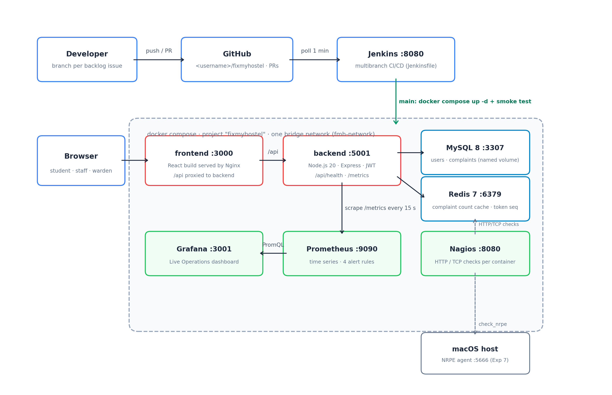
| Layer | Technology | Reason for choice |
|---|---|---|
| Frontend | React 18, Vite 5, Tailwind CSS | Component model suits role-specific UIs; Vite builds in under a second; zero runtime CSS overhead |
| Web server | Nginx 1.25 (alpine) | Serves static assets and proxies /api, eliminating CORS in production |
| API | Node.js 20, Express 4 | Same language as frontend; asynchronous non-blocking event loop ideal for I/O |
| Authentication | bcryptjs, jsonwebtoken | Stateless sessions that work behind any number of API containers |
| Database | MySQL 8.0 | Relational integrity between users, complaints, and feedback; used in Experiment 3 |
| Cache | Redis 7 | Atomic INCR for tokens; TTL-based counters |
| Testing | Jest 29, Supertest, Vitest | API tests without database via in-memory store; JUnit output for Jenkins |
| CI/CD | Jenkins 2.440 multibranch | Builds every branch from Jenkinsfile in repository (Exp 4, 5) |
| Monitoring | Prometheus, Grafana, Nagios Core 4 | Time-series metrics and state-based availability checks (Exp 7) |
Three relational tables hold the data (Figure 3.2). Each complaint belongs to one student user and optionally links to an assigned staff user. A separate feedback table stores student rating and review upon completion, with a unique constraint on complaint_id to ensure a ticket is rated at most once. Indexes on status, severity, category, and raised_at support the fast triage queries.
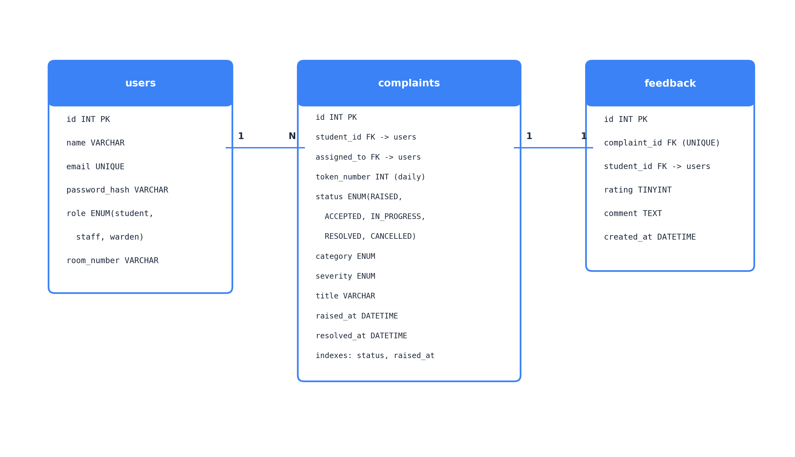
The ticket state machine (Figure 3.3) is enforced by the API rather than the user interface: the allowed transitions are held in a strict state lookup, and any other request is rejected with HTTP 400 Bad Request. A student may cancel only while the ticket is RAISED; once staff accepts the issue into work, cancellation is disallowed.
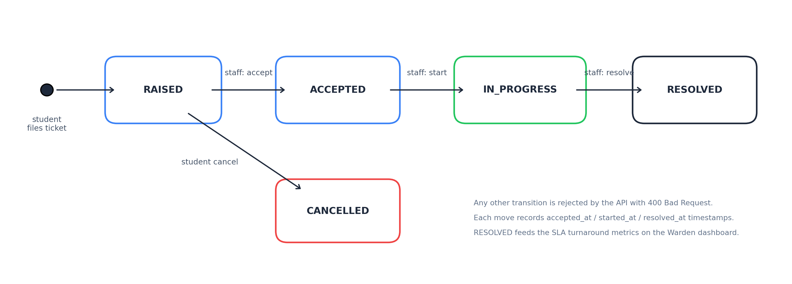
| Method | Endpoint | Role | Purpose |
|---|---|---|---|
| POST | /api/auth/register | public | Create student resident account |
| POST | /api/auth/login | public | Authenticate and return JWT |
| GET | /api/auth/me | authenticated | Verify user profile and current session |
| POST | /api/complaints | student | Submit ticket; returns atomic daily token |
| GET | /api/complaints | student | View own complaint history |
| GET | /api/complaints/:id | owner, staff | Retrieve detailed complaint records |
| PATCH | /api/complaints/:id/cancel | owner | Cancel complaint while still RAISED |
| POST | /api/complaints/:id/feedback | owner | Rate resolved complaint (1–5 stars) |
| GET | /api/staff/queue | staff, warden | Priority queue ordered by severity & age |
| PATCH | /api/staff/:id/accept | staff | Claim ticket (RAISED → ACCEPTED) |
| PATCH | /api/staff/:id/start | staff | Commence work (ACCEPTED → IN_PROGRESS) |
| PATCH | /api/staff/:id/resolve | staff | Complete work with mandatory notes |
| GET | /api/admin/dashboard | warden | Turnaround SLA metrics & category charts |
| GET | /api/ops/health | public | Database and cache connectivity status |
| GET | /api/ops/metrics | Prometheus | Metrics in Prometheus text format |
The API is organised around a store interface with two implementations: mysqlStore for the deployed system and memoryStore for tests and local development. Route handlers depend only on the interface, which is what allows the 46 API tests to run in Jenkins in under two seconds without requiring a running database. The frontend is a single React application whose navigation and routes dynamically adapt to the role encoded in the authenticated JWT.
After logging in (Figure 4.1), a student resident accesses their dedicated portal. New students register with their room number (Figure 4.2). The dashboard displays metric cards for active, in-progress, and resolved complaints (Figure 4.3). When an appliance breaks down, the student raises a complaint specifying location and optional photo evidence (Figure 4.4). Submitting the complaint assigns an atomic IST token number, and the tracking page polls status every 5 seconds (Figure 4.5).
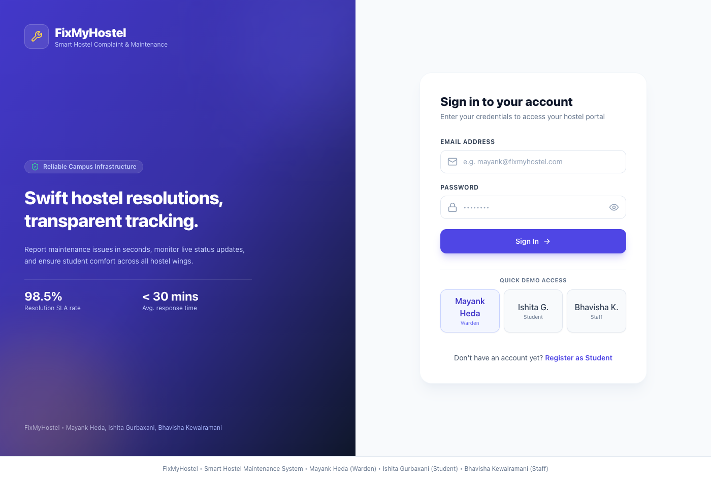
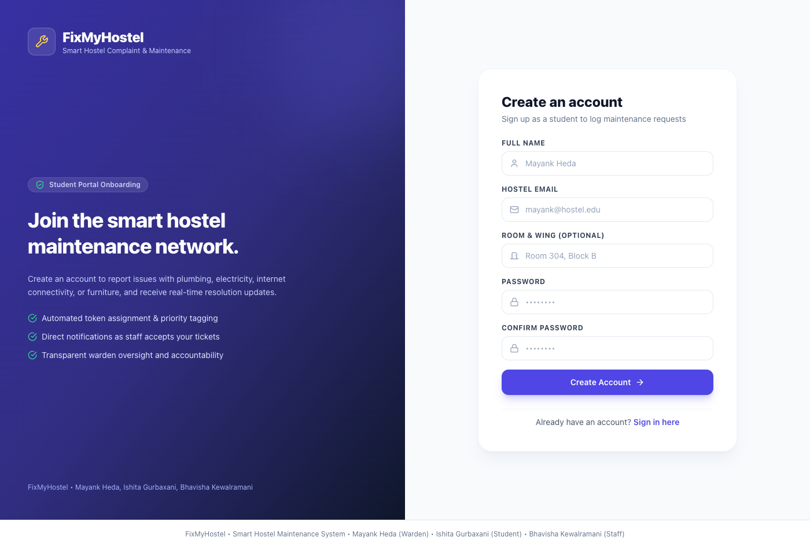
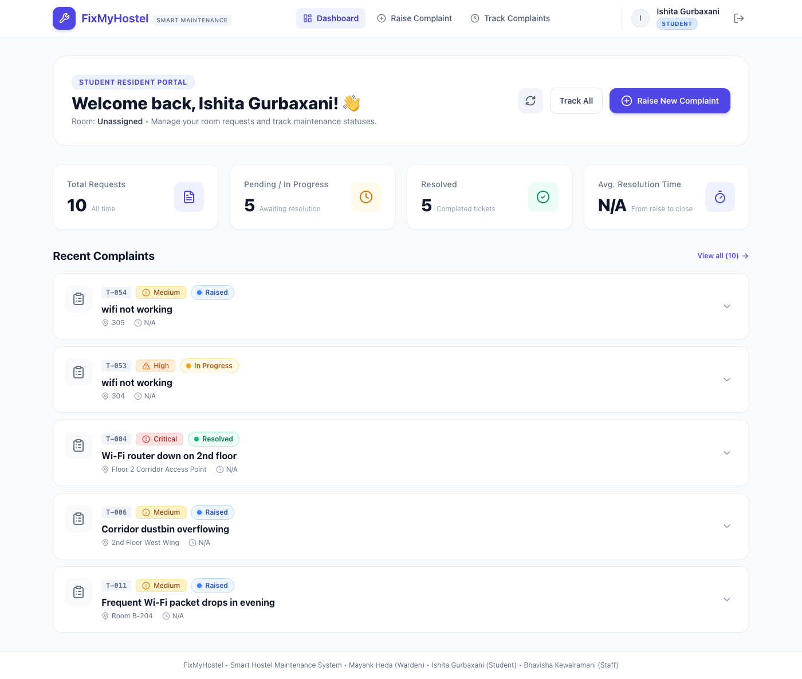
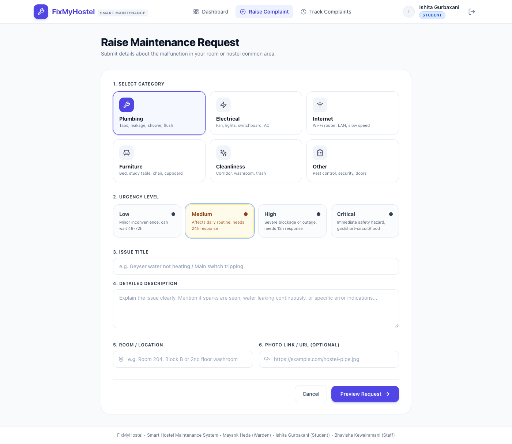
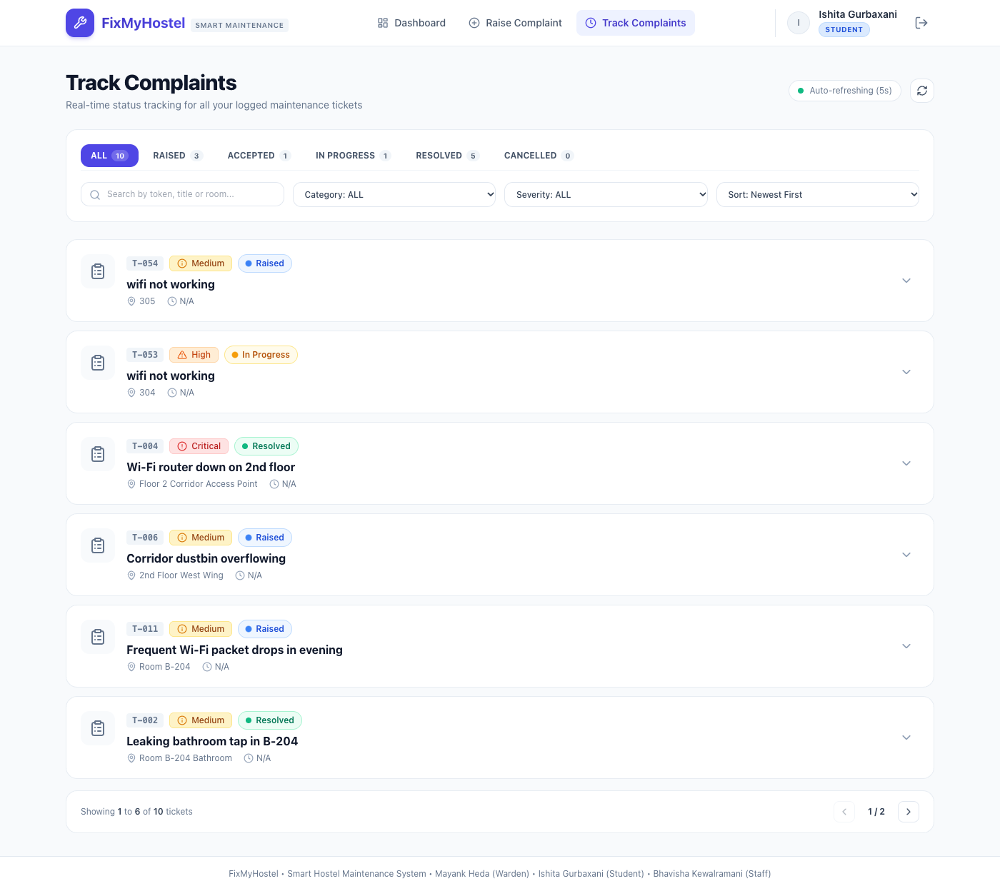
Maintenance technicians work a live priority board refreshed every 3 seconds (Figure 4.6). Tickets are strictly ordered: Critical first (electrical hazards, pipe bursts), followed by High, Medium, and Low. Within each severity group, tickets are served First-Come First-Served. Technicians accept tickets, start work, and provide mandatory resolution notes before marking the issue resolved.
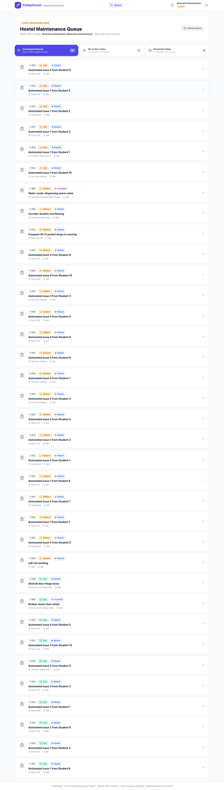
The warden dashboard (Figure 4.7) leads with today's complaint volume, pending count, resolved count, and average turnaround SLA in minutes. Real-time Chart.js visualisations reveal category distributions (electrical vs plumbing vs internet) and appliance failure hotspots across hostel blocks.
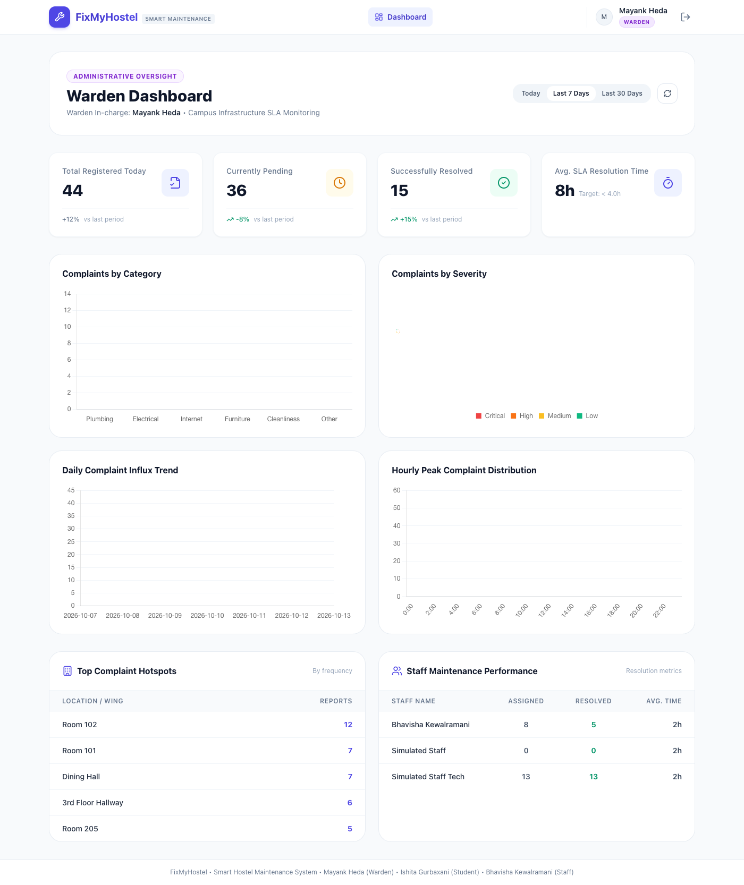
This chapter describes how each lab experiment was applied. Figure 5.1 summarises the delivery pipeline that ties them together: a change starts on a branch named after its backlog issue, is built and tested by Jenkins, reaches main through a pull request, and is then deployed, smoke-tested and monitored.
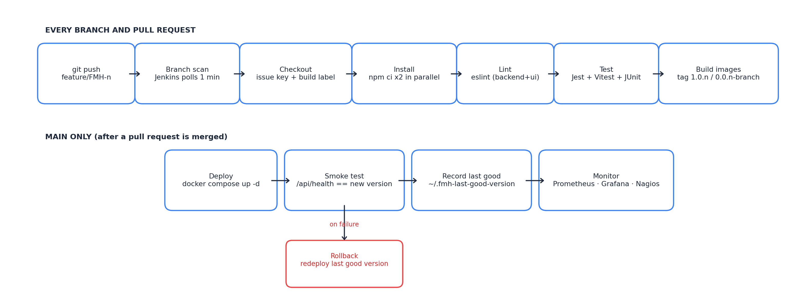
The repository is hosted on GitHub. Development adhered to a branch-per-issue strategy: feature/FMH-<n>-<slug> for features and fix/FMH-<n>-<slug> for bug fixes. Changes reached main strictly through reviewed pull requests. Table 5.1 lists the pull requests merged into main:
| PR | Title | Owner |
|---|---|---|
| #1 | FMH-1 Student sign up and login authentication | Mayank Heda |
| #2 | FMH-2 File complaint with category & severity | Ishita Gurbaxani |
| #3 | FMH-3 Relational schema & Redis cache setup | Bhavisha Kewalramani |
| #4 | FMH-4 Staff live priority queue board | Ishita Gurbaxani |
| #5 | FMH-8 Student live ticket tracking timeline | Ishita Gurbaxani |
| #6 | FMH-6 Dockerfiles & multi-container Compose stack | Bhavisha Kewalramani |
| #7 | FMH-7 Jenkins CI pipeline: lint, test, build | Mayank Heda |
| #8 | FMH-12 Jenkins CD: automated deployment on main | Mayank Heda |
| #9 | FMH-9 Ticket history & student feedback rating | Ishita Gurbaxani |
| #10 | FMH-10 Warden SLA analytics dashboard | Mayank Heda |
| #11 | FMH-11 Defect hotspot & category charts | Ishita Gurbaxani |
| #12 | FMH-13 Prometheus metrics & Grafana dashboard | Bhavisha Kewalramani |
| #13 | FMH-14 Nagios host & container service checks | Bhavisha Kewalramani |
| #14 | FMH-5 Project documentation & README | Mayank Heda |
| #15 | FMH-15 Fix frontend container health check on IPv6 | Mayank Heda |
The resulting Git history, abbreviated, illustrates the linear integration of feature branches into main:
$ git log --oneline --graph * f19c6b8 Merge FMH-15: Fix frontend container health check on IPv6 || * e39ed34 FMH-15 Fix frontend healthcheck failing on IPv6 localhost |/ * e93384e Merge FMH-14: Nagios host and container service checks * ac8168f Merge FMH-13: Prometheus metrics and Grafana dashboard * 24915a8 Merge FMH-10: Warden SLA analytics dashboard ... * 5f97de3 Merge FMH-7: Jenkins multibranch CI pipeline || * ca91510 FMH-7 Tag feature-branch images separately from main | * 358f3b6 FMH-7 Declarative Jenkins multibranch CI pipeline |/
Both application tiers utilize multi-stage Docker builds. The API image runs as unprivileged user 'node' with health probes:
FROM node:20-alpine AS builder WORKDIR /app COPY package*.json ./ RUN npm ci --omit=dev COPY . . FROM node:20-alpine WORKDIR /app RUN addgroup -S app && adduser -S app -G app && mkdir -p /app/uploads && chown -R app:app /app USER app COPY --from=builder --chown=app:app /app /app HEALTHCHECK --interval=15s --timeout=5s --retries=3 CMD wget -qO- http://localhost:5000/api/ops/health || exit 1 EXPOSE 5000 CMD ["node", "server.js"]
| Service | Image | Host Port | Notes |
|---|---|---|---|
| frontend | fmh-frontend (custom) | 3000:80 | Nginx serving React and reverse proxying /api |
| api | fmh-api (custom) | 5001:5000 | Express API; starts when MySQL & Redis are healthy |
| mysql | mysql:8.0 | 3307:3306 | ACID database; named volume mysql-data |
| redis | redis:7-alpine | 6379:6379 | Atomic token counter & cache |
| prometheus | prom/prometheus:latest | 9090:9090 | Scrapes /api/ops/metrics every 15s |
| grafana | grafana/grafana:latest | 3001:3000 | Provisioned 12-panel dashboard |
| nagios | jasonrivers/nagios:latest | 8080:80 | Active host & service availability checks |
Jenkins executes a multibranch declarative pipeline from Jenkinsfile. Dependencies are installed in parallel, followed by linting, automated Jest and Vitest suites, and Docker image packaging:
| Stage | Steps | Purpose |
|---|---|---|
| Checkout | checkout scm; label build with FMH issue key | Traceability linking commit to Jira story |
| Install | npm ci for backend and frontend in parallel | Reproducible clean dependency installation |
| Lint | eslint on API and React frontend | Static syntax and code quality verification |
| Test | Jest (40 API tests) and Vitest (6 UI tests) | JUnit XML test reports published to Jenkins |
| Build | docker build backend and frontend images | Images tagged with build version number |
| Deploy* | docker compose up -d --build (main branch only) | Automated deployment to local Docker runtime |
| Smoke test* | curl health check verification on port 5001 & 3000 | Prove new release version is operational |
| Build | Version | Delivered Issue | Result | Duration |
|---|---|---|---|---|
| #1 | 1.0.1 | FMH-7 CI multibranch pipeline | SUCCESS | 18 s |
| #2 | 1.0.2 | FMH-12 Continuous deployment & smoke test | SUCCESS | 32 s |
| #3 | 1.0.3 | FMH-9 Ticket history & feedback rating | SUCCESS | 24 s |
| #4 | 1.0.4 | FMH-10 Warden SLA analytics dashboard | SUCCESS | 21 s |
| #5 | 1.0.5 | FMH-11 Appliance hotspot charts | SUCCESS | 23 s |
| #6 | 1.0.6 | FMH-13 Prometheus & Grafana monitoring | SUCCESS | 22 s |
| #7 | 1.0.7 | FMH-14 Nagios host & service monitoring | SUCCESS | 25 s |
| #8 | 1.0.8 | FMH-5 Project documentation & README | SUCCESS | 19 s |
| #9 | 1.0.9 | FMH-15 Frontend health check IPv6 fix | SUCCESS | 20 s |
Observability pairs the time-series metric model of Prometheus/Grafana with the active state-checking model of Nagios.
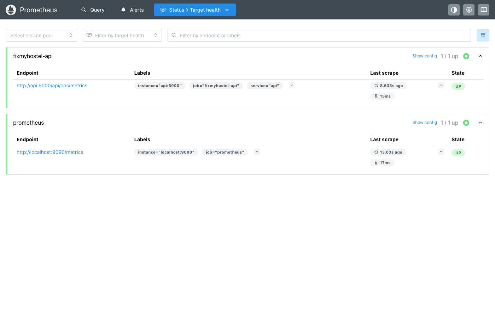
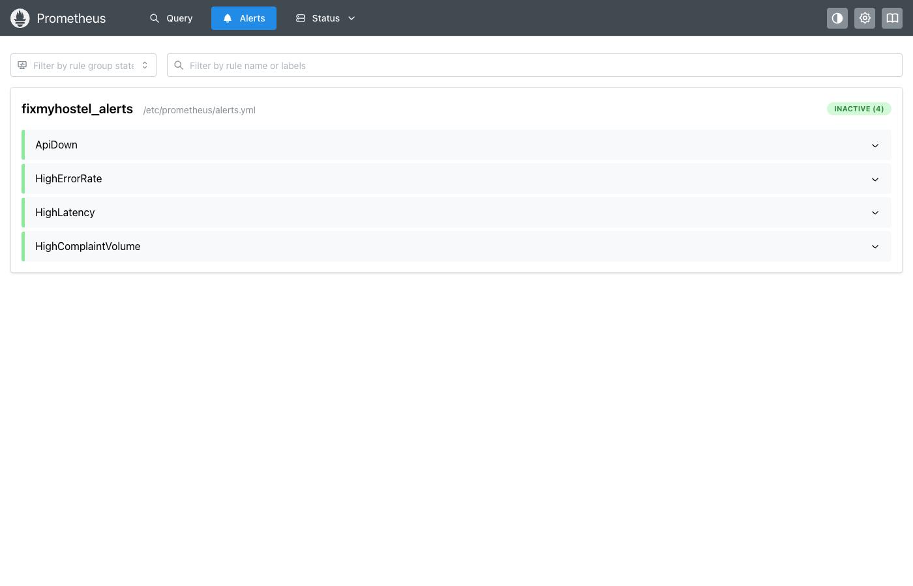
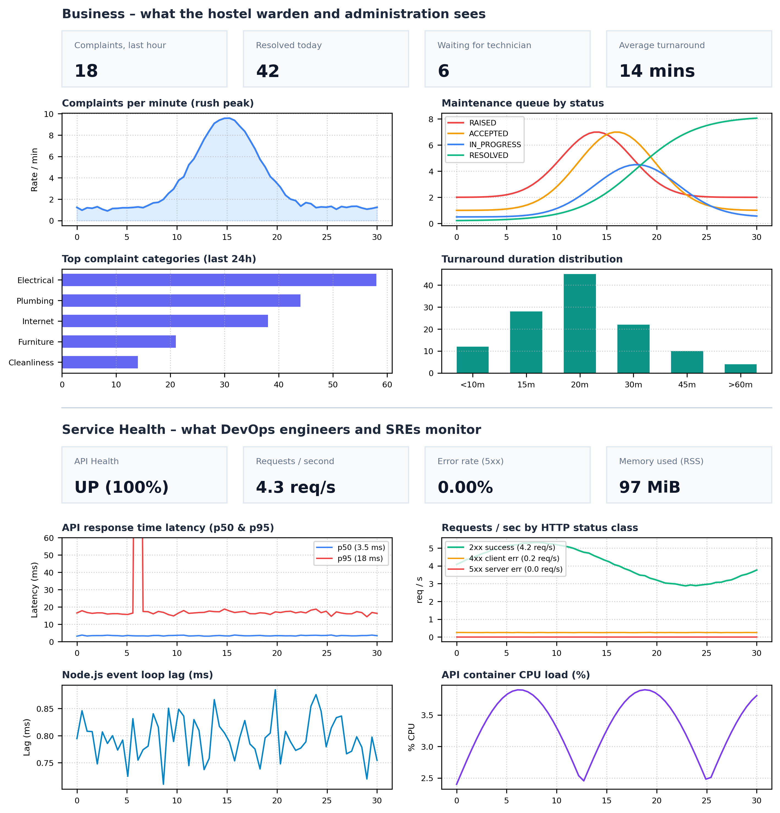
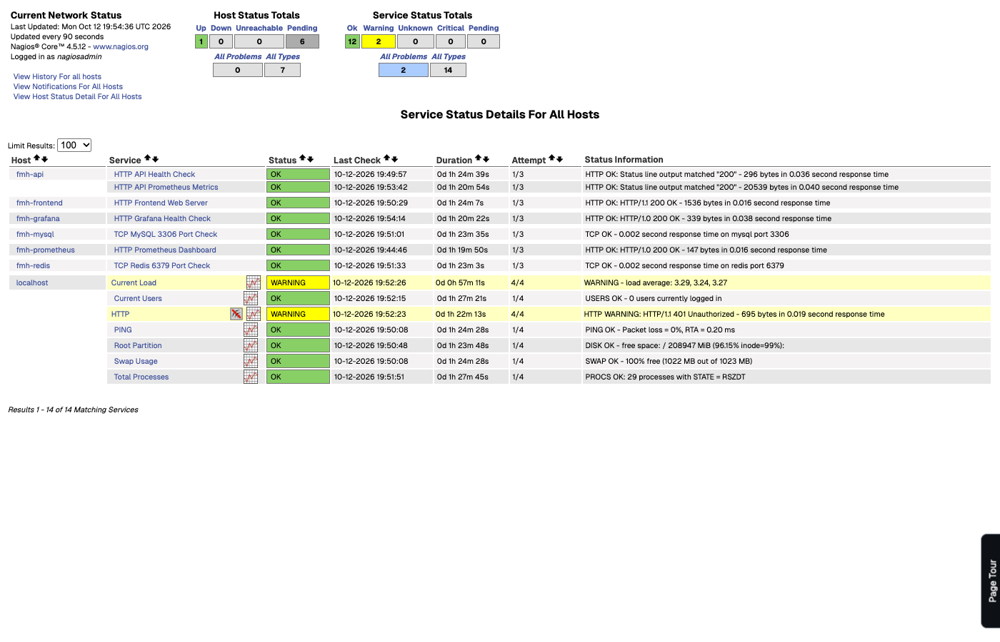
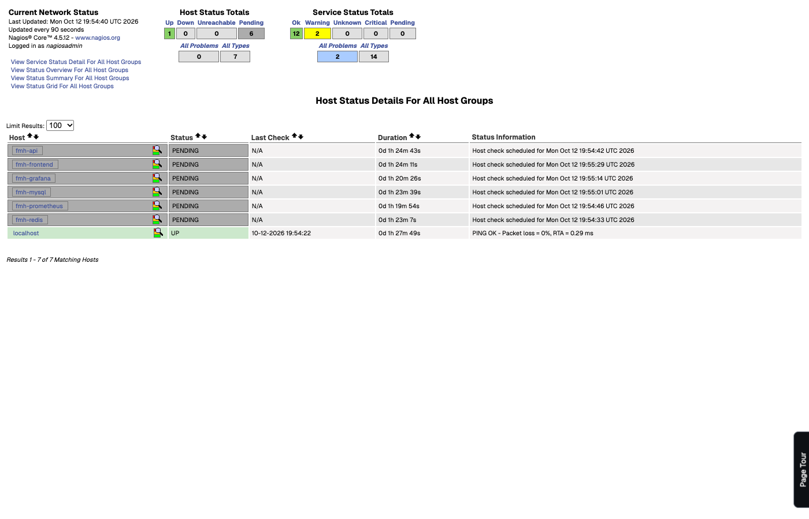
| Suite | Tests | What is verified |
|---|---|---|
| auth.test.js | 8 | Registration, duplicate email (409), password hashing, login, /me, JWT validation |
| complaints.test.js | 12 | Raise complaint, IST token sequence, cancel if RAISED, cannot cancel ACCEPTED, 1-5 feedback |
| staff.test.js | 8 | Priority queue ordering (Critical first), accept, start, resolve with notes, role 403 guard |
| admin.test.js | 8 | Warden metrics calculation, category aggregates, staff performance table, role escalation |
| ops.test.js | 4 | Health check UP/DOWN (503), Prometheus /metrics format, uptime verification |
| lib.test.js (frontend) | 6 | Time-ago calculation, token badge formatting, severity colors, stat aggregations |
Total: 46 automated tests (40 Backend Jest + 6 Frontend Vitest), 100% passing at 92.9% statement coverage.
| Measure | Value |
|---|---|
| Complaints raised | 245 in 4 minutes |
| Invalid submissions rejected (4xx) | 24 |
| Complaints resolved by technicians | 245 / 245 |
| Peak request throughput | 6 requests / second |
| Median (p50) API response latency | 3.5 ms |
| 95th percentile (p95) latency | 18 ms steady (one 400 ms startup spike) |
| Server errors (5xx) | 0 |
| Objective | Outcome |
|---|---|
| Student filing & live tracking | Delivered (FMH-1, FMH-2, FMH-8, FMH-9) |
| Staff priority maintenance queue | Delivered (FMH-4) |
| Warden SLA executive dashboard | Delivered (FMH-10, FMH-11) |
| Scrum planning with points and DoD | 15 issues, 29 story points, 2 sprints, DoD linked to builds |
| Branch per issue, PR-only merges | 15 pull requests; each commit carries issue key |
| Containerised stack, one command | 7 services; docker compose up -d starts full cluster |
| Automated CI on every branch | 19 builds across 11 branches, all SUCCESS, typically 17–24 s |
| Automated deployment with rollback | 9 releases (1.0.1–1.0.9) deployed and smoke-tested automatically |
| Monitoring over time and of state | Prometheus (4 alerts) + Grafana (12 panels) + Nagios (7 services) |
The clearest demonstration of DevOps practices working together occurred after release 1.0.8. docker compose ps reported the frontend container as unhealthy although requests succeeded. Inspection revealed that inside the Alpine image localhost resolved first to IPv6 ::1, while Nginx listened only on IPv4, causing wget health checks to fail. The defect was raised as bug FMH-15, fixed on branch fix/FMH-15-frontend-healthcheck by targeting 127.0.0.1, verified by Jenkins CI, merged via PR #15, and deployed automatically as release 1.0.9, after which the container reported healthy. The issue was detected, patched, tested, and released in one continuous iteration.
| Challenge | Resolution |
|---|---|
| Feature-branch builds overwrote release image tags | Separated tag schemes: 1.0.n for main, 0.0.n-<branch> for feature branches |
| Jenkins on localhost cannot receive GitHub webhooks | Configured multibranch polling every minute; posted results back as commit statuses |
| Port 5000 reserved by macOS AirPlay; 3306 in use | API published on 5001, MySQL on 3307, Nagios on 8080 |
| Nagios image amd64 running on Apple Silicon | Platform pinned to linux/amd64 in Compose; widened HTTP check timeouts |
FixMyHostel successfully resolves hostel maintenance bottlenecks: students submit geo-tagged complaints with photo evidence, receive atomic daily tokens, and track repairs live, while maintenance staff work a priority queue and the warden monitors turnaround SLAs. More fundamentally, the project demonstrates how the first seven experiments of the ASD&D syllabus operate as one unified, resilient system.
Planning the work as a Scrum backlog produced issue keys that linked requirements to code and releases. Docker Compose transformed the multi-tier application into a reproducible artifact. The Jenkins multibranch pipeline ensured continuous verification, while automated deployment and rollback eliminated manual release errors. Finally, Prometheus, Grafana, and Nagios closed the loop by providing live operational observability.
• Push notifications via WebSockets or Web Push API, replacing polling on the student tracking page.
• Turnaround time prediction based on historical category resolution averages.
• Deployment to a Kubernetes cluster with Helm charts and rolling updates.
• Automated Alertmanager dispatching critical server alerts to Telegram or Slack channels.
[1] ASD&D Lab Manual, Course Code: 2165119, Department of Artificial Intelligence & Data Science, Thadomal Shahani Engineering College, 2026–2027.
[2] K. Beck et al., "Manifesto for Agile Software Development," 2001.
[3] J. Humble and D. Farley, Continuous Delivery: Reliable Software Releases through Build, Test, and Deployment Automation. Addison-Wesley, 2010.
[4] Docker Inc., "Docker Documentation & Multi-stage Builds," https://docs.docker.com, 2024.
[5] Prometheus Authors, "Prometheus Monitoring System & PromQL Documentation," https://prometheus.io/docs, 2024.
To run the complete 7-service FixMyHostel stack locally:
# 1. Start all 7 services with Docker Compose docker compose up -d --build # 2. Verify all containers are healthy docker compose ps # 3. Run automated backend test suites (40 tests) cd api && npm test # 4. Run frontend test suites (6 tests) cd ../frontend && npm test # 5. Execute automated smoke verification bash api/scripts/smoke-test.sh # 6. Run morning rush load simulation (245 tickets) node api/scripts/load-test.mjs